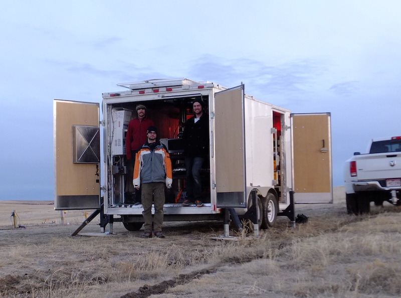

Projects
Things I am currently or have previously worked on
Chimera
Steward Observatory, University of Arizona, 2017-Present
Chimera is a high-speed photometer with simultaneous three-color photometry in the Sloan r’ (562-695nm), i’ (695-844nm), and z’ (826-920nm) bands. The optical design provides well-corrected fields of view of 9.7 arcmin in the z’ band and 6.0 arcmin in r’ and i’ bands. The wide field of view facilitates acquisition and tracking of rapidly moving satellites and allows for a variety of photometric calibration methods. The optical design uses a wide-field collimator, two dichroic beam splitters, and three re-imagers. The design is optimized for the Steward Observatory Kuiper 1.54m Telescope, although other telescopes can be supported with the exchange of the wide-field collimator. Chimera utilizes three Princeton Instruments Pro-EM HS cameras, which provide data at rates up to 228 Hz in full frame mode. Rates over 1000 Hz are possible by defining photometric regions of interest (ROIs). Read more...

Pomenis and The Dog House
Steward Observatory, University of Arizona, 2017-Present
The Steward Observatory SSA team developed the Pomenis Astrograph System as an alternative to more traditional narrow field of view small SSA systems. The astrograph is innovative with its fast optical design versus a traditional longer focal length found on commercial Cassegrain telescope that most “Raven class” systems are based on. Compared with other systems used for SSA, the Pomenis astrograph has an exceptionally wide 5-degree field of view and a fast readout CCD camera. These features enable synoptic survey of the deep space satellite population several times per night. The aperture and focal length were carefully selected to achieve sensitivity relevant to synoptic GEO SSA with an integration time short enough to allow high precision astrometric reference using the streaked background stars. With its 7-color filter wheel, Pomenis also performs multi-color photometric screening of deep space satellites looking for anomalous behavior and can identify objects for higher fidelity measurements and study. Pomenis is housed in a unique trailer mounted enclosure, which enables the system to be deployed with minimal infrastructure, operated remotely and autonomously, and quickly relocated as required. Read more...

EUSO-SPB1
Colorado School of Mines, 2016-2017
As a pathfinder mission of the Extreme Universe Space Observatory (EUSO) collaboration, a 1m size telescope was flown on a NASA Super Pressure Balloon in 2017. The primary science goal of EUSO-SPB1 was to make the first observations of high energy cosmic ray extensive air showers by looking down at the atmosphere. The telescope consisted of two 1m x 1m square acrylic fresnel lenses which provided an approximately 11° x 11° field of view on a 48 x 48 high-speed photomultiplier tube based detector. Final integration and testing of the instrument was completed at the Colorado School of Mines before being shipped to Wanaka, NZ for flight preparations and launch. The balloon carrying EUSO-SPB1 was launched on April 24, 2017 from Wanaka Airport. The balloon sprung a leak and the mission was terminated only 12 days into the planned 100 day flight. The payload was lost in the Pacific ocean.

EUSO-GLS Prototype
Colorado School of Mines, 2013-2017
The Global Light System (GLS) is a planned network of 12 ground stations which will use Xenon flash lamps and steered UV lasers to create test light sources for calibration of the future Extreme Universe Space Observatory (EUSO) detector on board the International Space Station. A mobile prototype was built at the Colorado School of Mines. The prototype is built into a trailer to allow mobility to and from campus and nearby cosmic ray detectors in Utah (EUSO-TA) and eastern Colorado (AMT). The system includes a high-powered UV pulsed laser mounted on an optical table inside the trailer and is equipped with a two-axis steering head which is raised through a sliding-hatch opening in the roof of the trailer. For stability, when deployed the optical table and laser system are decoupled from the chassis of the trailer and are separately supported by a set of outrigger jacks.

Auto-Grader Website
Colorado School of Mines, 2016
A further evolution of Dr. Christopher Painter-Wakefield's homework code testing system, the Auto-Grader website allows students to login and complete small coding assignments online. The website includes a built-in text editor for writing code and an automated testing script. After expiration of a given assignment the students' progress and grades are automatically calculated and prepared for export via the admin login.